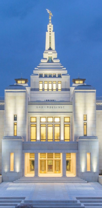

Temple Album
☰
Home
Old
New
Large
Small
Temples of the World
Mahabodhi Temple – India
Angkor Wat – Cambodia
Wat Arun – Thailand
Shwedagon Pagoda – Myanmar
Temple of Heaven – China

To-ji Temple – Japan
Boudhanath Stupa – Nepal
Borobudur – Indonesia
Karnak Temple – Egypt
 Borobudur – Indonesia
Karnak Temple – Egypt
Borobudur – Indonesia
Karnak Temple – Egypt